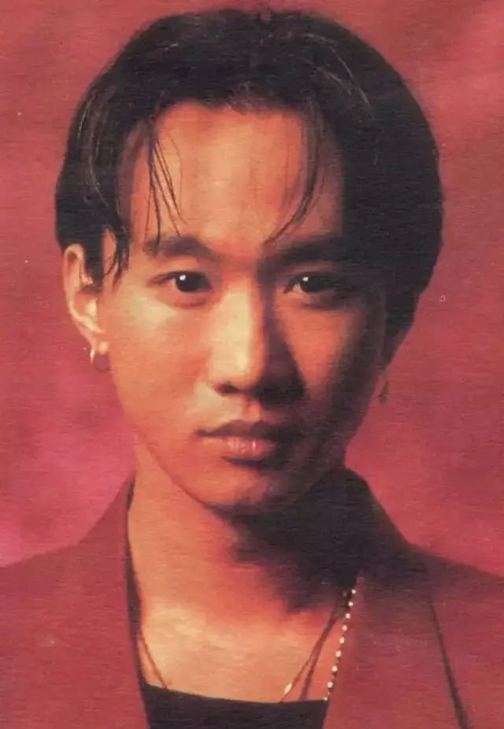
正文共计18000字左右
预计阅读时间40min
转载请在后台回复“授权”
每年六月底，我的心情都会复杂些。
因为27年前，家驹曾在这个月陨落。
他的声音和故事已经陪伴了我近十年的时间。
我听过很多音乐，有记录的是虾米上的两万多首歌。
beyond的歌不是最前卫的，也不是最有艺术才华的，更不是技术最好的。
但却是最真诚的。
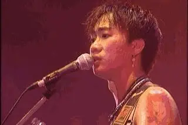
很难想象，那些近三十年前的赤子之声竟能跨越语言、地域和时空的差异，直抵人的内心。
在挫败中、在雨夜里、在医院楼道的地板上、在三十多个小时的绿皮火车里，我在家驹的声音中得到了理解、鼓励和方向。
这篇文章献给家驹和beyond，他们远比大众所看到的更丰富。
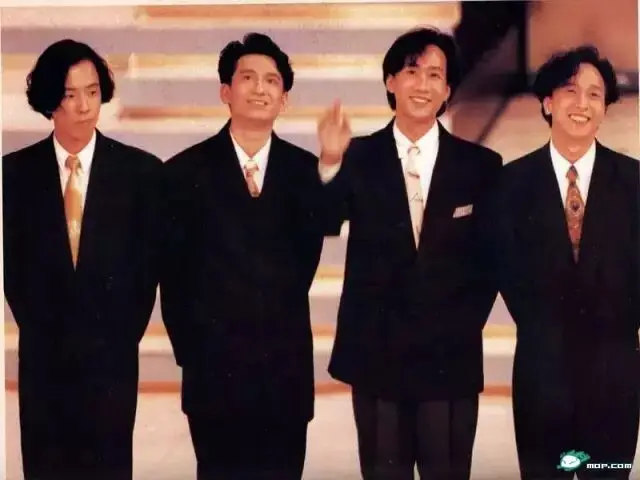
-01- 灰色轨迹
1962年，黄家驹出生在一个很普通的劳工家庭。
一家七口挤在不到三十平方米的小房子中。
毋庸置疑，黄家驹童年经历和目睹了很多艰辛和困苦。
但幸运的是，家驹出生在摇滚盛世。
上世纪六、七十年代，正是披头士乐队、滚石乐队、平克.弗洛伊德等超级乐队风靡世界的时代。
他们用悲鸣的吉他表达着内心炙热的情感，用爆裂的鼓点高呼着对于社会的不满。
很多过去大家藏着、掖着、不敢表达的东西都被他们唱了出来。
很多社会的黑暗被他们用吉他击碎。
因此，摇滚的本质是一种风格强烈、直截了当、传播极快的艺术表达方式。
比起权衡利弊的沉默和道德说教的虚伪，摇滚非常直接，甚至可以说是“简单”。
对就是对，错就是错，有想法、有意见那就唱出来，他们的吉他从不会忍气吞声。
因此，摇滚从来都是毒菜者所忌惮的对象。
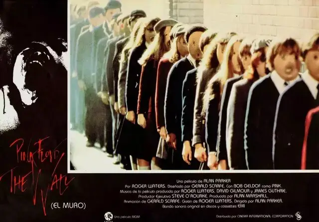
我们无法想象东德人民在听到平克.弗洛伊德《迷墙》后，还会乐于接受阻碍自由的柏林墙继续存在。
滑动下方
查看完整诗词
▼
We don't need no education
我们不需要任何教育
We don t need no thought control
我们不需要任何思响的恐@@制
No dark sarcasm in the classroom
不要教室里黑暗的讽刺
Teachers leave them kids alone
老师们都离孩子们远远的
Hey! Teacher! Leave them kids alone!
嘿!老师!离那些孩子们远点!
All in all it's just another brick in the wall
总之那只是墙上的另一块砖
All in all you're just another brick in the wall
总之你只是墙上的另一块砖头!
(A bunch of kids singing) We don't need no education
(一群孩子唱)我们不需要非教育
We don t need no thought control
我们不需要恐志思响
No dark sarcasm in the classroom
不要教室里黑暗的讽刺
Teachers leave them kids alone
老师们离那些孩子们远远的
Hey! Teacher! Leave us kids alone!
嘿!老师!离那些孩子远点!
All in all it's just another brick in the wall
总之那只是墙上的另一块砖
All in all you're just another brick in the wall
总之你只是墙上的另一块砖头!
Spoken (说道)
Wrong Guess again!又猜错了!
If you don't eat yer meat you can't have any pudding
如果你不吃你的肉你就不能吃布丁!
How can you have any pudding if you don't eat yer meat
不把你的肉吃掉,你怎么能吃布丁!
You! Yes you behind the bikesheds stand still laddie!
你!就是你,站在那别动,遮雨棚后面的女士!
Sound of many TV's coming on all on different channels
不同电视频道的声音传来
The Bulls are already out there
警察就在外面
Pink Aaaaaaaaaaaaaaaaaaaaaaaarrrrrgh!
(爆裂及尖叫声)
This Roman Meal bakery thought you'd like to know
这罗马玉米粉烤面包,相信你愿意尝尝
我们也无法想象有人在听到约翰列侬的《imagine》，心中不会萌发出和平与爱的渴望。
滑动下方
查看完整诗词
▼
imagine there's no heaven
想像这个世界没有天堂
it's easy if you try
只要你想像,这事很轻松
no hell below us
想像这个世界没有地狱
above us only sky
在我们的头顶只有天空
imagine all the people
想像这个世界所有的人
living for today...
为今天而生活着
imagine there's no countries
想像这个世界没有国家
it isnt hard to do
只要你去做,这事并不难
nothing to kill or die for
没有人会被杀或为此死亡
no religion too
也没有宗教的纠缠
imagine all the people
想像这个世界所有的人
living life in peace...
在和平中生活着
you may say i'm a dreamer
你也许会说:我是个梦想者
but i'm not the only one
但我绝不是唯一
i hope someday you'll join us
我希望有一天你会加入我们
and the world will be as one
那世界将会合一
imagine no possesions
想像这个世界没有财产
i wonder if you can
这个奇迹,由你来实现
no need for greed or hunger
想像这个世界没有饥饿和贪婪
a brotherhood of man
人们像兄弟一样友善
imagine all the people
想像这个世界所有的人
sharing all the world...
分享着整个世界
you may say i'm a dreamer
你也许会说，我是个梦想者
but i'm not the only one
但是我绝不是唯一
i hope some day you'll join us
我希望有一天你会加入我们
and the world will live as one
那世界将会合一
少年家驹正是在各种不经意的场合中听到了这些歌声，并完成了音乐启蒙。
当家驹15岁无意间捡到邻居搬家遗留下的那把吉他时，他的摇滚生命就已经开启。
黄家驹像着了魔一样疯狂练习吉他，常常没日没夜地弹吉他，弹得手痛的不行，就放到热水中泡一泡，然后继续练习。
他在琴行中结识了叶世荣、邓炜谦等志同道合的朋友。
他们互相交流着关于音乐的理解和技巧，并渴望做自己的音乐。
1980年，18岁的黄家驹和叶世荣、邓炜谦（beyond第一位主音吉他）、李荣潮（beyond第一任贝斯手）等人组建了业余乐队。
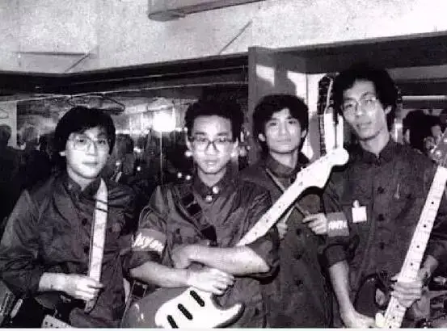
那个时候，他们玩的音乐可不是我们耳熟能详的《真的爱你》，而是纯摇滚乐曲。
这些音乐受西方摇滚影响显得相当前卫、尖锐，并充满了年轻人的燥热。
1983年，乐队报名参加了黑鸟组织的吉他大赛。
因为报名需要个名字，主音吉他手邓炜谦给乐队起名beyond，意为超越自己。
他们演奏了自己的原创作品《脑部侵蚀》，并获得比赛第一名。
这首长达8分钟的纯音乐说的是一个曾犯严重罪行的人，在放监之后，面对社会的种种压迫，虽然痛苦，但仍有朋友鼓励他，可始终建立不起自尊，到最后走向一个自毁的道路的故事。
这首昏暗愤懑的曲子表达了当时他们的处境。
beyond热爱音乐，并努力创作着自己认可的音乐，可毫无疑问，在当时以流行音乐为主的香港，他们的音乐注定是边缘的，注定是没有市场的。
也就是说，他们没有办法以音乐为生。
为了生活，黄家驹自己做过办公室助理、铝窗、五金、空调、水电工程、电视台布景员，并倒贴着钱来坚持着音乐梦想。
个中滋味，黄家驹心里最有体会。
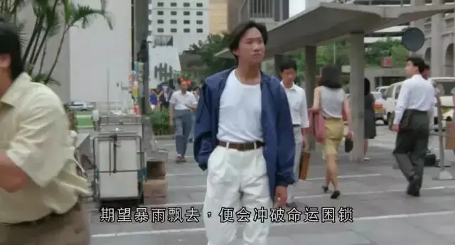
一天，黄家驹弹了一段solo，邓炜谦惊呼“家驹，你好厉害！我弹不了这么快的”。
家驹笑道：“不要开玩笑啦，你是主音吉他手..”
邓炜谦接着问“你弹的那段solo是谁的，我从未听过，满伤感的。”
家驹回答“你猜不到是谁的，其实是我自己写的”
“啊~家驹，你什么时候写的这么棒的作品？”
“其实前段时间你知道我不怎么开心！天天老爸老妈在家骂我不务正业，找几个工都不合我意，玩音乐又不赚钱，感觉前途灰暗。
有天晚上我就写出了这种感觉.....其实我相信我们有天会成大器的。”
这首忧伤的歌便是后来的《再见理想》，据说，家驹写出这首歌后兴奋的几晚上都睡不着觉。
滑动下方
查看完整诗词
▼
独坐在路边街角 冷风吹醒默默地伴着我的孤影只想将结他紧抱 诉出辛酸就在这刻想起往事心中一股冲劲勇闯抛开那现实没有顾虑彷佛身边拥有一切看似与别人筑起隔膜几许将烈酒斟满那空杯中借着那酒洗去悲伤旧日的知心好友何日再会但愿共聚互诉往事心中一股冲劲勇闯抛开那现实没有顾虑彷佛身边拥有一切看似与别人筑起隔膜心中一股冲劲勇闯抛开那现实没有顾虑彷佛身边拥有一切看似与别人筑起隔膜一起高呼Rock n' Roll...一起高呼Rock n' Roll...一起高呼Rock n' Roll...一起高呼Rock n' Roll...一起高呼Rock n' Roll...一起高呼Rock n' Roll...一起高呼Rock n' Roll...一起高呼Rock n' Roll..
在这三年的坚持中，家驹不仅吉他技能已经变得非常精湛，更重要的是，他的作曲天赋也在后天的努力中突显而出。
坚持原创在家驹身上已经从想法变成了一种切实可行的能力。
当年，因为各种原因，邓炜谦、李荣潮相继退出乐队，之后陈时安接替邓炜谦成为主音吉他手，黄家强接替李荣潮成为贝斯手。
就作曲、作词而言，陈时安可以说是一个和家驹才华不相上下的人，他喜欢英伦摇滚，英语也说得非常棒。
在他的影响下，当时beyond创作的主要方向是英文摇滚歌曲。
这些歌往往是黄家驹作曲，陈时安作词，然后乐队成员一起编曲而来的。
这些歌曲中写满了他们对于社会的观察以及自身坚持梦想过程中的沮丧、怀疑和勇气。
比如说《大厦》，这首歌表达了他们生活在现代都市里的压抑和坚持。
滑动下方
查看完整诗词
▼
When I'm walking down the street
当我走在大街上
All the glass boxes round n' round
我被周围的玻璃盒子团团包围
Oh that's what I have to bear
哦，这就是我所要承担的
Super building catch the air
这些超级大厦就要触摸到天了
Crazy traffic from East to West
疯狂的车流从东到西
I'll be in madness I don't care
我就要陷入疯狂了 但我不介意
Never never shine on me
从来没有阳光照耀着我
In the forest got no trees
在这森林里一棵树也没有
Oh that's what I have to bear
哦，这就是我所要承担的
Super building on my head
这些超级大厦就在我头上
In the city I can't feel good
在这城市里我无法舒服
I'll be in madness I don't care
我就要陷入疯狂了 但我不介意
《long way without friend》则更加直抒心意，表达了坚持理想的孤独和无助。
滑动下方
查看完整诗词
▼
The sun is scorching down,and the sand reflect its light.
灼热的太阳底下，沙子折射着它的强光
I'm moving with my shadow,through this empty haunted land.
我的影子伴随着我，来到这片久违的空地。
Strange sounds from nowhere,and the strong wind cut my face.
突然不知道从哪传来了奇怪的声音，强风也在刺痛着我的脸.
Nobody'll help but what else can i do ?
没有人会来陪我，我该怎么办？
Oh! lord i need your help,
噢，上帝啊，我需要你的帮助
in the sky there's a eagle soaring by!
像一只雄鹰一样在天空翱翔飞过
oh, long way without friends,
噢，没有朋友陪伴的路上
but i'll never, never change my mind!
但我从未放弃我的决心
the moon is hanging high,with her lonely stars behind,
月亮独自高挂在天空，陪伴她寂寞的是后面的星星
the moonlight lit the ground.the moonlight give me a chill,
月光撒满大地，也给我带来了一丝丝寒意
but only the moonlight,will show me my way
但是只有这冰冷的月光愿意给我指路
nobody'll help,but what else can i do?
没有人陪伴的路上，我该怎么办？
Oh! lord i need your help,
噢，上帝啊，我需要你的帮助
in the sky there's a eagle soaring by!
像一只雄鹰一样在天空翱翔飞过
oh, long way without friends,
噢，没有朋友陪伴的路上
but i'll never, never change my mind!
但我从未放弃我的决心
the gift is in my hands,and the road before my eyes,
命运掌握在自己手中，路在自己眼前
the fire has ceased to burn ， i can feel the torture's gone.
激情已经停止了燃烧，我能感觉到它痛苦的离去
but will it last for long,when the spell is still around.
但它不会永远离去，因为我仍然发现它还围绕在我身边
nobody care,but what else can i do?
没人会在意，我能怎么办？
Oh! lord i need your help,
噢，上帝啊，我需要你的帮助
in the sky there's a eagle soaring by!
像一只雄鹰一样在天空翱翔飞过
oh, long way without friends,
噢，没有朋友陪伴的路上
but i'll never, never change my mind!
但我从未放弃我的决心
这个时期，还有一首非常厉害的作品《myth》（神话），这首歌可以说是典型的西式艺术摇滚。
在凄美悱恻的词曲中，家驹用歌声泣诉着主人公的悲凉命运。
神秘、缠绵、悲伤、幽静、迷幻，真的难以想象，这些二十岁刚出头的年轻人竟然能创作出如此优秀的作品。
滑动下方
查看完整诗词
▼
这是一个流传久远的故事
It was a story told for years
一个女孩来到这世上
When a young girl dwelled this land
她的双眸如星般闪亮
With eyes shone like the star
她的笑意迷尽人间与天堂
And a smile that charmed both heaven and earth
月儿在她身边羞闭
The moon was ashamed when next to her
花儿在她面前低垂
And the flowers bowed their heads
她的歌声让猛兽变得温柔
Her songs could tame the beasts
她的双手驱走所有的忧伤
Her hands could wave all sorrows away
然而命运之神被嫉妒心所驱
Yet that Fate was envy ’bout this girl
设下诱惑圈套，教她永远睡去
And a plot was planned to lay her down
她被命运带到美丽的花园
To a pasture she was led
那里终年生长着绿草如茵
Where the grass was always green
在这令人心醉的美景之间
Inthe midst of this wonderland
静静地立着那株致命之花
Stood the plant that’d bring her permanent end
那是命运之神被嫉妒心所驱
yet That Fate was envy ’bout this girl
设下诱惑圈套教她永远睡去
And a plot was planned to lay her down
当她看到了那死亡之木
The plant of death was in her eyes
空气中弥漫着它的芳香
Sending its fragrant through the air
天地间仿佛充满了笑声
Laughter form below was heard
于是她指尖轻触
With a touch the task was done
就象利箭穿过她的心房
Like an arrow it speared her heart
就象毒液熄灭生命之光
Like venom it killed her light
她的身体慢慢倒下
As her body slowly dropped
她的歌声渐渐停止
Stopped the singing from around
她的生命从此远去
Her soul left
再也没有一点声息
without a sound
当悲剧传到天上
The god of love was deeply hurt
爱神也黯然心伤
When the tragedy was known
他的心片片破碎
It cut right into his heart
为着她寸断肝肠
那含泪忍痛的天神啊
With tears and pain
他飞临到姑娘身旁
he flew to her
为了结束无尽的痛苦
To end this sorrow
他毅然拔剑高扬
he drew his sword
当鲜红的热血洒在四周
How red the blood that sprayed around
有荆棘在那枝干上生长
As the thorns grew around its stem
当花瓣被那热血染红
And the petals stained in red
美丽而令人心碎般静静绽放
从此这世上多了一种新花
Turned the plant into a rose
从此这世上添了玫瑰芬芳......myth（神话）
1985年，陈时安因为要到国外求学而离开了beyond，黄贯中接替陈时安成为新的主音吉他手。
陈时安离开后，黄家驹曾多次表达对这位好友的思念，他的电吉他便被黄家驹一直保留在二楼后座（beyond排练室）。
当beyond小有名气后，黄家驹在“真的见证”演唱会上依旧挂念着陈时安，在向歌迷短暂回忆了两人一起玩吉他的难忘时光后，家驹又深情地唱起了那首《myth》。
-02- 再见理想
1985年7月，beyond四子忙上忙下，正在准备一场演唱会。
因为没什么钱，他们向银行贷款16000元来筹备演唱会，音响、海报设计都是他们亲力亲为。
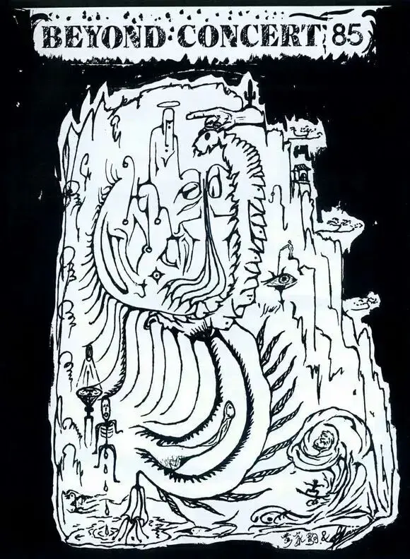
△有天使、恶魔、眼睛等丰富的抽象元素，至今这幅非常有创意的海报依旧让人费解
因为是地下乐队，没有自己的经纪公司，所以几个人又像个黄牛一样上蹿下跳兜售着自己的演出门票。
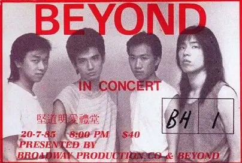
这场演唱会的名字叫做“永远等待”。
这个名字很有意味，既是等待着歌迷、经纪人的到来，又表达着他们等待理想达成的决心。
当晚，300余人进场，每张票卖40元，一场演唱会下来，还亏了不少钱。
这场演唱会上，beyond演唱了13首原创音乐，家驹在台上还表演了吉他独奏。
他们的才华受到了音乐经纪人陈健添的赏识，为日后的beyond的商业转型奠定了基础。
1986年，beyond自资发行了第一张专辑《再见理想》。
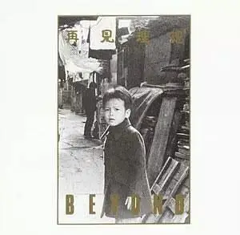
很多人不理解为什么刚开始便要再见理想。
一方面是因为这张专辑有一首同名的歌。
更主要就像海报中小孩的回望一样，这是beyond对过去的告别，是对过去六年地下音乐的总结。
那六年里，beyond随心所欲做着自己的音乐，那个时候的歌还没有优美动听的旋律，更没有标志性的双吉他solo，有的是beyond对音乐理想的各种探索。
可以说，那些音乐更加纯粹，更加前卫，更具有冲击力，也更加多元。
即使三十年前的音乐，今日能听懂的也是少数。
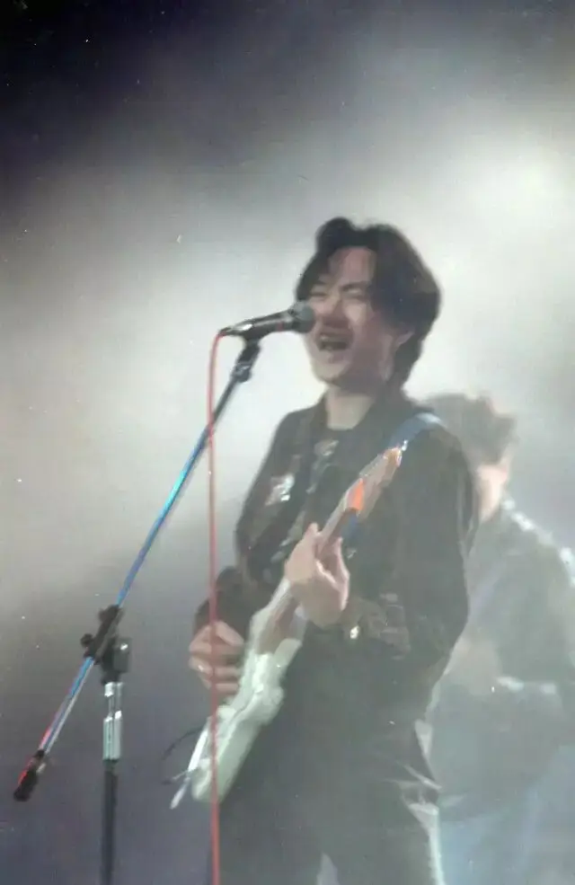
在磕磕绊绊的现实面前，beyond摸爬滚打不知道将来是否能够继续做音乐。
总之，就是能继续做，beyond也不可能像过去那样不食人间烟火，他们必须要考虑市场，要加入更多商业、流行的元素。
所以，这张专辑虽是一场告别，但却是beyond乃至整个香港音乐界最具有艺术成就的专辑之一。
比如《dead romance》，这是家驹雨夜里的迷思，充满了悲伤、无助、空虚和绝望。
第一部分是纯音乐，家驹精妙绝伦的电吉他滑音就像是一个人在哭泣，那般迷幻、悲伤。
第二部分，家驹填上了英文歌词，雨夜中，一个绝望的人叩问着自己的存在，并向上帝求问答案。
滑动下方
查看完整诗词
▼
in a rainy night 在这雨夜
can you hear me 你能否倾听我
in a rainy night 在这雨夜
can you help me 你能否帮助我
man,what are you thinking of 人啊 你在思考着什么
man,what do you need 男人 你需要什么
man,nobody tell you what to do人啊 你是否已感到无人建议的困惑
man ,you need somebody to hurt 人啊你真的需要一些人去伤害你吗
in a rainy night 在这雨夜
can you hear me 你能否倾听我
in a rainy night 在这雨夜
can you help me 你能否帮助我
man,you feel so lonely 人啊你感到如此孤独
man,can you hear the message come from the sky 人啊你能否听见来自上帝的讯号
man,you are driving into the rain人啊 你正让自己淋着雨
man,you know it's time to find the prey人啊 现在你可以找到充饥的食物了
in a rainy night 在这雨夜
can you hear me 你能否倾听我
in a rainy night 在这雨夜
can you help me 你能否帮助我
类似风格的还有《last man who knows you 》，编曲、合声都非常优美，唯一的缺点就是这首歌的时长太短！
- 03 - 光辉岁月
陈建添的出现改变了beyond的命运。
△陈健添（英语：Leslie Chan Kin Tim，1957年2月21日－），香港流行歌手经理人，亦曾参与乐队Beyond的作词和浮世绘的混音等幕后音乐制作，发掘了Beyond、王菲、黑豹乐队等，也是中国唱片公司“红星音乐生产社”创办人，并曾担任香港Beyond乐队在1986年至1993年期间的经理人，因合约法律纠纷问题，被歌迷形容为“最受欢迎乐队的最不受欢迎经纪人”。
作为一个眼光独到并极具市场嗅觉的音乐经纪人，他告诉beyond，你们不能光玩自己的音乐，也要考虑市场。
这对于beyond来说是一场妥协，但更是一场挑战和成长。
过去你可以像个孩子一样非常自我，执拗于自己的世界，但当你长大了，你就必须要按照社会的规则去玩。
这似乎是一场束缚，是对个性的抹杀，但却能通过和世界、大众的对话而对自己有更加清醒的认识。
毕竟，商业上能取得成功并非易事，而要在考虑市场的情况下坚持自己的理想更是艰难。
刚开始，他们并不会写流行歌曲，为了博人眼球，他们穿着阿拉伯服饰，演奏着中东色彩的异域摇滚。
这些都与当时香港的流行乐队格格不入。
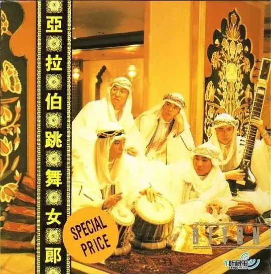
beyond当时也很迷茫，黄家驹在《新天地》中这些写道“黑色烟雾弥漫路上，迷迷糊糊中失了方向。”
经过一段时间的阵痛后，beyond慢慢学会了驾驭流行元素。
不仅在旋律、编曲加入了很多流行元素，题材上爱情歌也逐渐多了起来。
终于，1988年的专辑《秘密警察》让beyond一炮走红。

其中的《大地》成为了beyond成名曲，入选了当年十大劲歌进去，并成为十大非情歌选举第一名。
这首歌磅礴大气，编曲中加入了很多中国元素，表达了beyond的家国情怀和对父爱的思念。
滑动下方
查看完整诗词
▼
在那些苍翠的路上
历遍了多少创伤
在那张苍老的面上
亦记载了风霜
秋风秋雨的度日
是青春少年时
迫不得已的话别
没说再见
回望昨日在异乡那门前
唏嘘的感慨一年年
但日落日出永没变迁
这刻在望着父亲笑容时
竟不知不觉的无言
让日落暮色渗满泪眼
在那些开放的路上
踏碎过多少理想
在那张高挂的面上
被引证了几多
千秋不变的日月
在相惜里共存
姑息分割的大地
划了界线
回望昨日在异乡那门前
唏嘘的感慨一年年
但日落日出永没变迁
这刻在望着父亲笑容时
竟不知不觉的无言
让日落暮色渗满泪眼
回望昨日在异乡那门前
唏嘘的感慨一年年
但日落日出永没变迁
这刻在望着父亲笑容时
竟不知不觉的无言
让日落暮色渗满泪眼
回望昨日在异乡那门前
唏嘘的感慨一年年
但日落日出永没变迁
这刻在望着父亲笑容时
竟不知不觉的无言
让日落暮色渗满泪眼
这张专辑里的歌几乎每一首都是经典。
包括现在火遍大江南北的《喜欢你》，这是因为家驹沉醉于音乐、整天没有时间陪女友，最终忍痛分手后有感而发的作品。
这也是为什么beyond的爱情歌非常耐听的原因。
他们的爱情歌并不是辞藻华丽的口水歌，也不是刻意地去制造浪漫。
他们的爱情表达总是和现实、理想交织在一起，非常真实，会让人立马产生强烈的共鸣。
滑动下方
查看完整诗词
▼
细雨带风湿透黄昏的街道
抹去雨水双眼无故地仰望
望向孤单的晚灯
是那伤感的记忆
再次泛起心里无数的思念
以往片刻欢笑仍挂在脸上
愿你此刻可会知
是我衷心的说声
喜欢你 那双眼动人
笑声更迷人 愿再可
轻抚你 那可爱面容
挽手说梦话 像昨天 你共我
满带理想的我曾经多冲动
你怨与他相爱难有自由
愿你此刻可会知
是我衷心的说声
喜欢你 那双眼动人
笑声更迷人 愿再可
轻抚你 那可爱面容
挽手说梦话 像昨天 你共我
每晚夜里自我独行
随处荡 多冰冷
已往为了自我挣扎
从不知 她的痛苦
喜欢你 那双眼动人
笑声更迷人 愿再可
轻抚你 那可爱面容
挽手说梦话 像昨天 你共我
She be do
这张专辑中还有一首黄贯中的《愿我能》也非常优秀，在浪漫且略带忧伤的吉他声中，黄贯中敞开心扉向人倾诉“愿我能，能离开多么公式的欢笑......”。
黄贯中希望在迷失中找到真实的自己，而在这份追寻中，他有自己的软弱和恐惧：害怕失败，谁来扶助我，怕再次孤独，独我唱歌。
从1989年开始，beyond对于流行摇滚的驾驭能力越来越强，编曲上极具特色，在题材上也变得更加丰富。
有呼吁环保的作品《送给不知怎去保护环境的人（包括我）》，有反战歌曲《amani》、《交织千个心》，有歌颂自由的《光辉岁月》以及歌颂母爱的《真的爱你》......
这些经典的歌将beyond推向成功，1991年beyond在红磡举办了生命接触演唱会，成为香港历史上第一支在红磡体育馆举办演唱会的乐队。
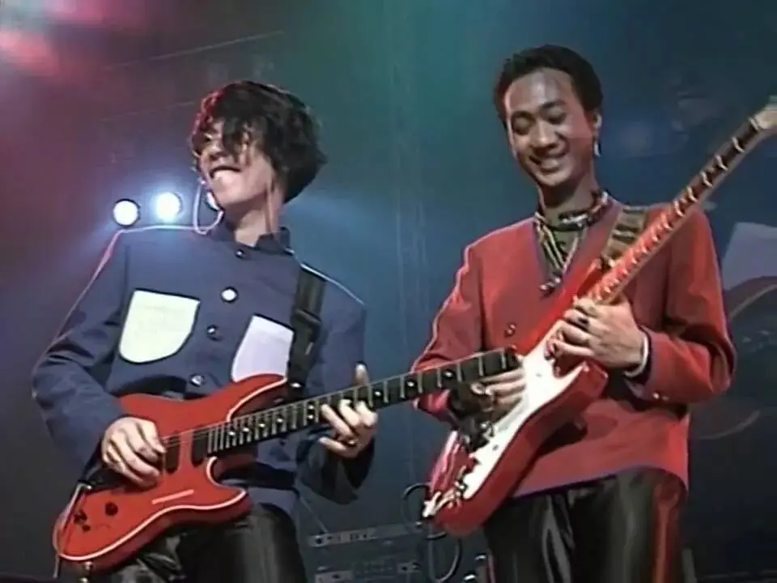
可beyond却背上了“摇滚叛徒”的骂名。
比起地下乐队阶段，beyond商业化后没有了以前的锋利和棱角，转而变得柔和了不少。
比起以前的赤忱，beyond“变得”不那么专注于音乐探索。
成名后，他们接受了很多包装，出席了很多活动，并且参演了多部影片。
看上去，beyond已经和虚有其表的娱乐圈已经打成一片。
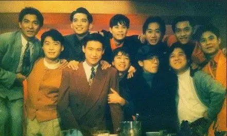
这让beyond的早期乐迷非常不屑。
可吐槽的话说起来简单且不需要负责，谁又会真正明白beyond行走在生死存亡边界的压力和无奈。
如果没有《大地》，beyond也许早已经解散。
因此，这个时期的beyond要比地下时期更摇滚。
并不是你的吉他有多暴躁、你的乐曲有多小众才是摇滚。
更多的是那种直面现实并坚持表达的勇气和魄力。
地下时期，他们根本就不在主流的音乐圈里，音乐也是业余的爱好。
这个时期的beyond，他们走进的是真正的战场，他们真实的感受着香港娱乐圈的轻浮，亲自见证着那种为出名而作秀的虚伪和无奈。
他们要将音乐作为终生的事业，他们不得不衡量自己所作出的每一个选择，因为有些决定一旦出错，他们将不得不告别自己喜欢的音乐。
因此，这个时期beyond的音乐虽然没有以往的锐利，但内在的情感表达变得更有力量、具有感染力。
在《谁伴我闯荡》中，beyond表达了他们在转变中的挣扎和对自我的怀疑，“几多天真的理想，几多找到是颓丧，沉默去迎失望，几多心中创伤，只有淡忘......”。
不要说别人对他们的指责，他们自己对于自己的选择也充满了质疑。
但无论如何，他们一直在探索的路上。
即使这条路是一条窄路。
滑动下方
查看完整诗词
▼
前面是哪方
谁伴我闯荡
沿路没有指引
若我走上又是窄巷
寻梦像扑火
谁共我疯狂
长夜渐觉冰冻
但我只有尽量去躲
几多天真的理想
几多找到是颓丧
沉默去迎失望
几多心中创伤
只有淡忘
从前话说要如何
其实你与昨日的我
活到今天变化甚多
只有顽强
明日路纵会更彷徨
疲倦惯了再没感觉
别再可惜计较什么
Wo
谁愿夜探访
留在我身旁
陪伴渡过黑暗
为我驱散寂寞痛楚
寻觅没结果
谁伴我闯荡
期望暴雨飘去
便会冲破命运困锁
几多天真的理想
几多找到是颓丧
沉默去迎失望
几多心中创伤
只有淡忘
从前话说要如何
其实你与昨日的我
活到今天变化甚多
只有顽强
明日路纵会更彷徨
疲倦惯了再没感觉
别再可惜计较什么
只有淡忘
从前话说要如何
其实你与昨日的我
活到今天变化甚多
只有顽强
明日路纵会更彷徨
疲倦惯了再没感觉
别再可惜计较什么
始终上路过
-04- 海阔天空
黄家驹是天生的领袖。
这种独特的才能不仅体现在他对乐队其他成员才能的挖掘和支持，更体现在重大抉择上的果断和智慧。
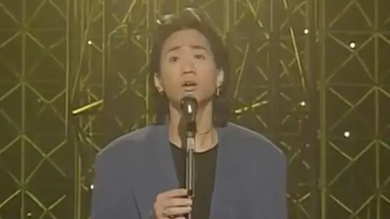
1991年生命接触演唱会上，beyond受到了一个日本音乐经纪公司的赏识。
再三考虑下，黄家驹毅然决定远走香港、转战日本。
这个决定是相当不容易的，尤其是在beyond在香港势头正猛的时候。
可黄家驹从没有遗忘自己的音乐理想，正如家驹所言，香港没有乐坛，只有娱乐圈。
成名后，beyond在各种活动中心力交瘁，他们再也不能像以往那样专注于创作。
而当时的香港也是看脸时代，只要你有个姣好的面孔，声音还过得去，经纪公司便可以为你量身打造包装，很快就会获得大批尖叫的粉丝。
beyond就曾创作了《俾面派对》，公开表达了他们对于香港娱乐圈的讽刺和不满。
滑动下方
查看完整诗词
▼
穿起一身金衣装
取消今天的工作
挤身缤纷的色彩
来让我去告诉你
派对永无真意义 AI
不管相识不相识
尽管多啲Say Hello
不需诸多的挑剔
无谓太过有性格
派对你要不缺席 OH
你话唔俾面
佢话唔赏面
似为名节做奴隶
种种方式的捆绑
请柬一出怎抵挡
想出千般的推搪
明日富贵与闭翳
也要靠你俾下面 OH
你话唔俾面
佢话唔赏面
似为名节做奴隶
你都咪话唔俾面
咪话唔赏面
似用人脸造钱币 AI
你话唔俾面
佢话唔赏面
似为名节做奴隶
你都咪话唔俾面
咪话唔赏面
似用人脸造钱币 AI
至惊至惊你哋唔俾面
因此，黄家驹决定离开香港。
因为他要的不是金钱和名利，而是起初的那个音乐梦想。
为什么选择日本。
举一些例子，大家就比较清楚了。
上世纪八十年代，昭和时代晚期，日本佳作不断。
谷村新司创作了《浪漫铁道》（张学友 “遥远的他” 原曲）、《花》（张国荣“共同渡过”原曲）
玉置浩二创作了《不要走》（张学友“李香兰”原曲）。
日本歌姬中岛美雪则凭一人之力养活了半个香港乐坛，邓丽君的《漫步人生路》、任贤齐的《伤心太平洋》、王菲的《人间》、《容易受伤的女人》、郑秀文的《一错再错》等歌曲原创都出自于她手。
更凶悍的是，这些歌手是完全创作型的艺人，很多歌词、曲、唱都是一人包办。
而久石让也在这个时期为《风之谷》完成了配乐。
神思者完成了《悲情城市》、《丝绸之路》以及《故宫的记忆》等原创纯音乐。
进入九十年代，全亚洲范围内几乎家喻户晓的天王级音乐制作人织田哲郎谱写了几百首歌曲，包括我们很熟悉《樱桃小丸子》、《龙珠》、《灌篮高手》以及《中华小当家》的主题曲。
滑动下方
查看完整诗词
▼
孤身一人
仆はもう一人で
彷徨在大都市
投げ舍てられた
就像被人丢弃的
空カンのようだ
空啤酒罐
互いのすべてを
如果非要探究
知りつくすまでが
彼此的一切
爱ならば いっそ
才叫爱的话
永久(とわ)に眠ろうか…
还不如永久长眠
世界が终るまでは
直到世界的尽头
离れる事もない
也不愿与你分离
そう愿っていた
曾在千万个夜晚
几千の夜と
许下心愿
戻らない时だけが
一去不回的时光
何故辉いては
为何却如此耀眼
やつれ切った
对憔悴不堪的心
心までも 壊す…
落井下石
はかなき想い…
渺茫的思念
このTragedy Night
在这个悲剧的夜
そして人は
而人们
形(こたえ)を求めて
总是追求表面答案
かけがえのない
结果错失
何かを失う
无可取代的宝物
欲望だらけの 街じゃ
在这充斥着欲望的街头
夜空の 星屑も
就连夜空繁星
仆らを 灯せない
也难以照亮我们
世界が终る前に
在世界结束之前
闻かせておくれよ
谁愿给我讲一个
満开の花が
与繁花盛开
似合いのCatastrophe
最贴切的不幸
谁もが望みながら
谁都满怀着期望
永远を信じない
却又不相信永远
…なのに きっと
...可是也一定
明日を梦见てる
梦想着明天
はかなき日々と
短暂的时光
このTragedy Night
在这悲剧的夜晚
世界が终るまでは
直到世界的尽头
离れる事もない
也不愿与你分离
そう愿っていた
曾在千万个夜晚
几千の夜と
许下心愿
戻らない时だけが
一去不回的时光
何故辉いては
为何却如此耀眼
やつれ切った
对憔悴不堪的心
心までも 壊す…
落井下石
はかなき想い…
渺茫的思念
このTragedy Night
在这悲剧的夜晚
このTragedy Night
这悲剧的夜晚 [5]
ZARD坂本泉水创作了《名侦探柯南》的主题曲《转动命运之轮》。
△坂井泉水（本名：蒲池幸子，1967年2月6日－2007年5月27日）是日本女性歌手、作词家，她是日本流行歌曲团体ZARD的主唱。2007年意外从医院一二楼连接间斜坡摔落约3米，倒卧在医院通往停车场的入口,并最终逝世。
横山菁儿的《英雄的黎明》、喜多郎的《宋家皇朝》等成为TVB影视剧配乐必备神曲......
因此，日本一直是亚洲音乐的高地。
家驹的选择是相当有远见和勇气的。
这个时期，beyond的《长@@成》（你懂得）与喜多郎合作，前奏让人眼目一亮。
《海阔天空》在日本著名编曲人梁邦彦的协助下更有层次，也更富感染力。
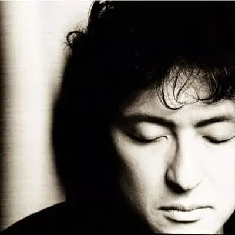
△梁邦彦是一位在日朝鲜人，出生于东京，血型O型。祖籍韩国济州岛，从祖父一代开始侨居日本。侨居日本的朝鲜族可以选择韩国或朝鲜为国籍，梁邦彦父亲选择了朝鲜国籍；母亲家乡在朝鲜新义州却选择了韩国国籍；梁邦彦跟随父亲选择了朝鲜国籍并就读于朝总联创办的学校。他是一位音乐家，曾为多部影视作品做过背景音乐。
beyond在交流碰撞中获得了很大的提高。
再加上初到日本的挫折和不适应，他们的创作神经变得异常敏感、发达。
《乐与怒》这张专辑水准极高，《情人》、《遥望》、《海阔天空》、《我是愤怒》....几乎每首都是精品，就是像《river》这样气势磅礴的曲子，都难以入选这张专辑。
可正当beyond在日本有所进展时，家驹却在1993年的六月意外坠亡，倒在了追求理想的路上，留给世界无限遗憾和遐想。
如果家驹还活着，已经58岁的他将如何回应年轻时代那无尽的“唏嘘”，家驹是否还会执着于自我。
面对如今的“风雨”，一向敢言的家驹又会创作出怎样的作品？
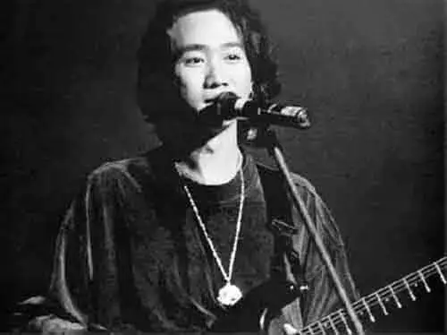
-05- live on your dream
网易云上一个网友这么评价：Beyond不是被神化的乐队，而是一支被低估的乐队！
我非常赞同这句话，今天很多人只是听一听那几首热门歌曲，并没有深入地挖掘beyond的其他歌曲。
这非常可惜，因为beyond最可贵之处在于他们充满生命力的原创精神。
他们的原创还不同于顾嘉辉、黄霑那样的原创，我们可以通过顾、黄的作品感受到那种豪气和中国古典音乐的魅力，可我们不会通过这些作品完全认识创作者。
而beyond却不一样，如果你把他们的歌都听一遍，你即使没有听过他们的故事，也会非常了解他们。
因为，他们的故事就在歌曲里。
他们遇到的挣扎、疑惑和困苦全在他们的作品中。
家驹是典型的双重人格，在人面前，他非常乐观、阳光，可你如果听了《dead romance》和《追忆》，你就知道他的内心有多悲伤。
你很难想象台上的家驹和歌曲背后的家驹竟然是一个人。
而事实上，他在作品中也早已经表达了这种"割裂"，在《遥望》中，家驹说“强把忧郁再掩盖”。
所以，听他们的作品，我们除了欣赏，更能感受到一个人在向你倾诉，在和你交流。
这会产生一种生命性的感染力。
这种能力在中国歌手中非常罕见，这就是为什么原创能力对于一个民族那么重要的原因。
原创代表着你要去独立的感受、思考和表达。
别人的东西，你去改编，你也许可以演绎的很好，但你仍然难以把握住他的精髓。
因为，那不是你的经历。
同样一件事，亲历者讲出来和其他人再加工讲出来的效果是完全不同的。
因此，判断一个地方的乐坛是否健康，是否有原创力。
你只需要看一下那个地方的音乐是不是绝大多数都是情歌。
因为，如果每个创作者真的去独立地思考自己的周边环境，你的眼中不可能只有爱情，还有房贷、车贷，还有家长里短，还有家人、社会、政治和国家。
如果都是情歌，那都是经纪公司和歌手一起包装来“勾引”年轻人的轻浮把戏。
beyond的作品正是因为这种独立、真挚的原创表达能力而充满了能量。
三十年前，一首描写封闭、愚昧的古老国度的《长@@成》，今天却让一些人惧怕而遭全网下稼。
那两首歌颂自由的《光辉岁月》和《海阔天空》，在虾米上的评论如今却被频鄙，甚至你不能再进行评论。
滑动下方
查看完整诗词
▼
钟声响起归家的讯号 在他生命里 仿佛带点唏嘘
黑色肌肤给他的意义 是一生奉献 肤色斗争中 年月把拥有变做失去
疲倦的双眼带着期望 今天只有残留的躯壳 迎接光辉岁月
风雨中抱紧自由 一生经过彷徨的挣扎 自信可改变未来
问谁又能做到 可否不分肤色的界限 愿这土地里
不分你我高低 缤纷色彩闪出的美丽 是因它没有
分开每种色彩 年月把拥有变做失去 疲倦的双眼带着期望
今天只有残留的躯壳 迎接光辉岁月 风雨中抱紧自由
一生经过彷徨的挣扎 自信可改变未来 问谁又能做到
今天只有残留的躯壳 迎接光辉岁月 风雨中抱紧自由
一生经过彷徨的挣扎 自信可改变未来 问谁又能做到
今天只有残留的躯壳 迎接光辉岁月 风雨中抱紧自由
一生经过彷徨的挣扎 自信可改变未来 问谁又能做到
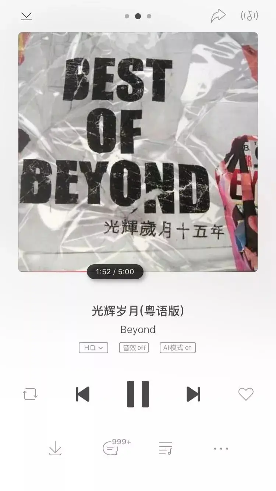
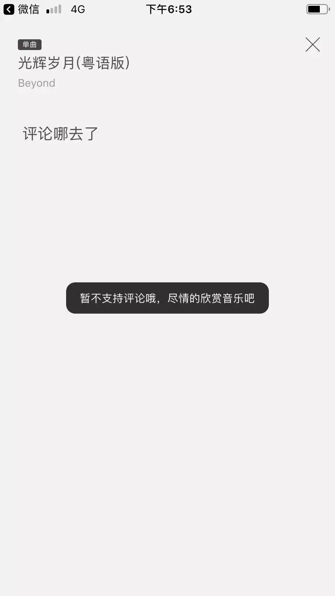
这就是对黄家驹的最大肯定。
他们的歌曲蕴含着跨越时空的巨大力量，这种力量来自于他们真实的经历和飞蛾扑火般的勇气。
能够让人深深地感受到共鸣。
十年前，高考结束的那一个晚上，同学们兴奋地跑去网吧玩，我也去了，不过我没有打游戏，而是盯着beyond的演唱会看了一晚上。
尤其是那首《午夜怨曲》，我含着热泪反反复复地看了很多次。
那些深有同感的歌词，家驹那不加修饰还有着痘印的面孔、那双忧郁的双眼、那真诚的歌声让我难以忘记。
上了大学，因为家驹而买了人生中第一把吉他，在宿舍中鬼哭狼嚎了四年，虽然不是那块料，但却经常被那些歌曲激励。
而同一层宿舍楼中，因为家驹弹吉他的远不止我一个人。
beyond的这种原创表达为所有人提供了一个可以模仿的“故事”，这个故事关于理想，关于坚持，关于忧郁，关于选择。
没有空洞的说教，没有冰冷的概念，但却有着触及人内心的力量。
因此，beyond有一项纪录恐怕世界上任何一个音乐人都难以望其项背，那就是有来自不同国家、不同时空的人给家驹写了超过50首的歌。
这些歌曲中， 充满了对家驹的思念、感激和尊重。
向大家推荐三首，一首是战友黄贯中的《故事》。
滑动下方
查看完整诗词
▼
你的声音 仍是那么近 就似安慰剂 抚慰着旧情人 昔日舞曲 无声告别 留下了无尽空虚 不再犹豫 永远嘅等待 原谅我今天 要再见理想 谈何容易 灰色的心 谁是勇敢 天真的创伤 留下赤红热血 无论是光辉岁月 或是命运派对 即使不可修补这缺口 也算曾是拥有 海不阔 天不空 你要我冷却夜雨中 无声岁月中 留低 是那冲开一切的脚印 门外看我会看得更清楚 期望你我坚守到谢幕 逝去日子中 留低 是我真的爱你的烙印 长城厚 厚不过我的心 期望你会给我去庇佑 写好这故事 永远嘅等待 原谅我今天 要再见理想 谈何容易 灰色的心 谁是勇敢 天真的创伤 留下赤红热血 无论是光辉岁月 或是无尽空虚 即使不可修补这缺口 也可继续麻醉 海不阔 天不空 但却有和平与爱 无声告别中 留低 是那冲开一切的脚印 门外看我会看得更清楚 期望你我坚守到谢幕 逝去日子中 留低 是我真的爱你的烙印 长城厚 厚不过我的心 期望你会给我再震撼 写好这故事 踏着灰色的轨迹回家 自信活着便精彩 我在雾里想你 无声岁月中 留低 是那冲开一切的脚印 门外看我会看得更清楚 期望你我坚守到谢幕 逝去日子中 留低 是我真的爱你的烙印 长城厚 厚不过我的心 期望你会给我去庇佑 写好这故事 我们嘅故事 我们嘅故事
另一首是马来西亚乐队异种的《Live on your dream》。
滑动下方
查看完整诗词
▼
扪心自问 永不忘记
给我这生道理
我生命都 延续这点真理
壹刻都不会心死
这生受用 永不离弃
担起这生使命
每天以歌 摇摆姿态
奏着我的歌 永不分昼夜
*跟您创造 永不敢忘记
壹切继续 永不会枯死
Wo ho o...
live on your dream
奏着感觉 永远不死
是信念真 永在高唱
摇摆过的路
对天嚎骂 却不受理
给您这么短暂
我坚守着 望跟您相见
奏着您的歌
最后一首是梁邦彦为家驹创作的纯音乐《the valley of a swan》。
世间纵有千万曲，人间再无黄家驹。
谢谢你，家驹。
-END-
这里没有挑逗你眼目情欲的小鲜肉
也没有挑动你肉体情欲的段子
更没有膨胀你今生骄傲的鸡血
我们只在乎那些最质朴真诚的作品
在那里我们才能恢复真正的想象力
我们也坚信这才是我们真正需要的

ID:Six_hundred_hits
长按二维码，一键关注
【六百击】
电影评论
尽情分享朋友圈

微信二维码打赏通道